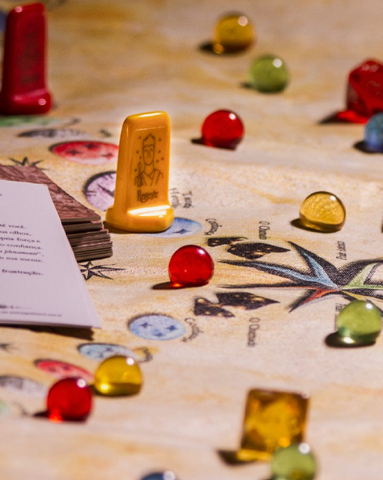
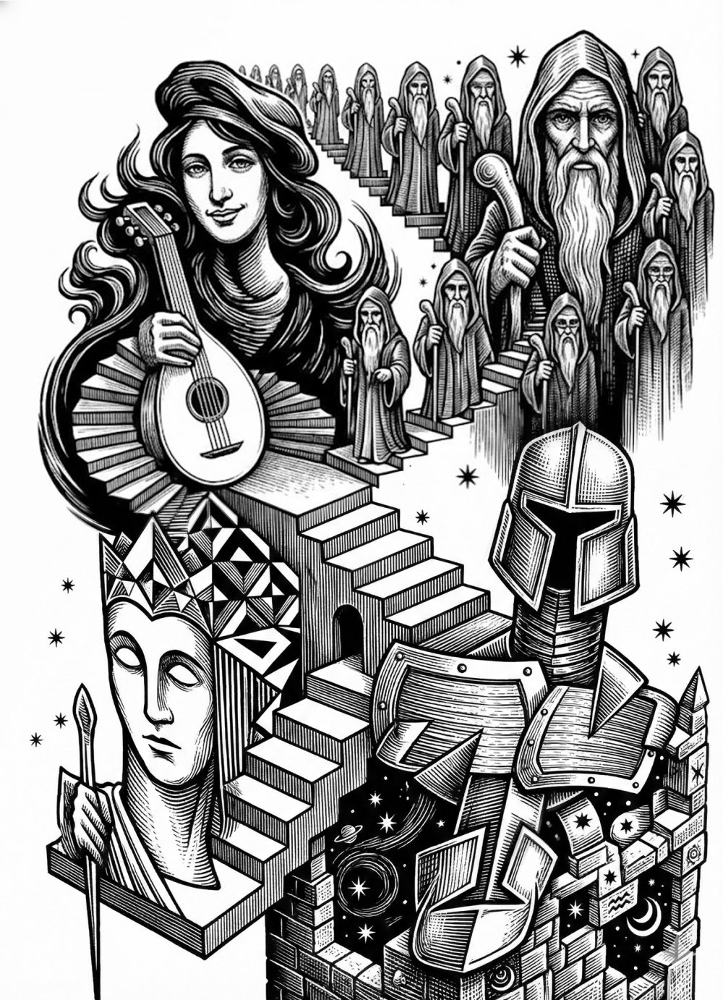
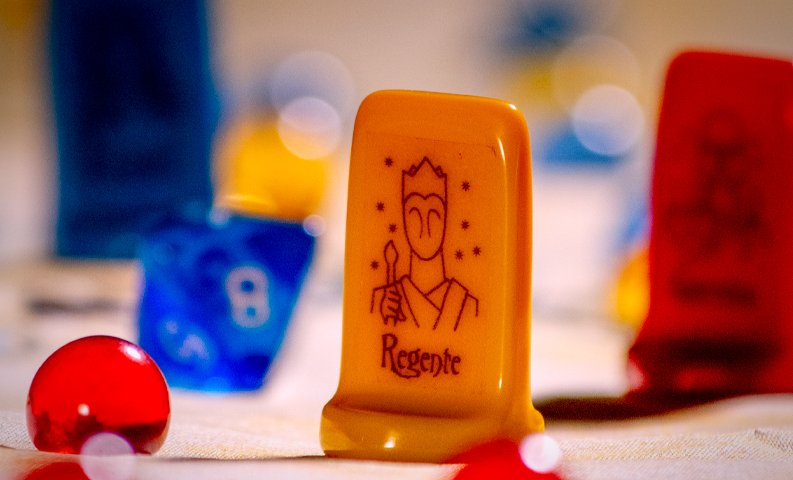

Qual seu maior desafio?
Todos nós enfrentamos desafios que nos convocam em diferentes momentos da vida. Às vezes aparecem como crises ou bloqueios que nos paralisam. Outras vezes, como inquietações profundas, padrões que insistem em se repetir, ou um chamado para expandir os horizontes. Quando estamos imersos nessas situações, pode ser mais difícil enxergar respostas criativas e novos caminhos com clareza.
Este jogo foi criado para ajudar você a olhar para seus desafios de uma perspectiva diferente. Por meio de imagens e símbolos, você pode descobrir padrões de comportamento, identificar crenças limitantes e reconhecer recursos internos que talvez nem saiba que possui.
Aqui você encontrará um espaço seguro para explorar suas questões mais profundas, onde cada insight é uma peça do quebra-cabeça que pode revelar não apenas a natureza dos seus desafios, mas também as possibilidades de transformação que existem.


Que tal uma jornada simbólica?
Através da linguagem simbólica e arquetípica, o Jogo do Herói cria um diálogo profundo com suas questões.
Durante a jornada, figuras arquetípicas emergem como guias, padrões universais da psique, que ajudam você a enxergar e lidar com seus desafios de formas que o pensamento habitual não alcança.
O Jogo se adapta ao seu momento presente, revelando conexões, significados e possibilidades que passam frequentemente despercebidas no cotidiano.
Fundamentado na mitologia da jornada do herói e na psicologia arquetípica de Carl Jung, a sessão é conduzida por uma terapeuta junguiana certificada pelos criadores do jogo.
Cada trajetória é, ao mesmo tempo, única, singular e coletiva, e a jornada da experiência humana em seus diferentes momentos.
Agende sua sessãoA Jornada heróica
A jornada heróica se expressa essencialmente em três momentos principais. O movimento de Sair do que nos é mais habitual, conhecido ou cômodo.
Ir em direção do que se desconhece, novas percepções, descobertas e conexões, e Retornar expressando e integrando seus insights e aprendizados em sua vida.
A jornada é a experiência humana nos seus diferentes momentos, e cada trajetória é ao mesmo tempo, singular, única e coletiva.

Como funciona
O jogo do Herói é um jogo de tabuleiro criado para gerar insights, autoconhecimento e caminhos para lidar com os grandes desafios da vida, através da linguagem mitológica, lúdica e criativa
Pode ser jogado individualmente ou em até quatro jogadores. O jogo começa quando você define um desafio que esteja enfrentando em sua vida nesse momento.
Inclui uma sessão devolutiva
Após o jogo você terá uma sessão devolutiva individual, a ser agendada, para aprofundar mais os elementos que surgiram na sua jornada.
Será um momento para novas considerações e insights enriquecendo a percepção e atuação pós-jogo.
É também uma oportunidade para digerir o que viu, ouviu e sentiu, e com acompanhamento profissional, acolher e entender questões que forem importantes.
Este suporte, que não faz parte do jogo, é um compromisso que tenho para que cada jogador possa aprofundar elementos simbólicos que o Jogo trouxe para cada um.
Agende sua sessãoQuem Facilita
O jogo é conduzido por mim, Paula Cordero. Psicóloga, especializada em Psicologia Junguiana e facilitadora certificada no ‘O Jogo do Herói’, em Breathwork.
Agende sua sessão